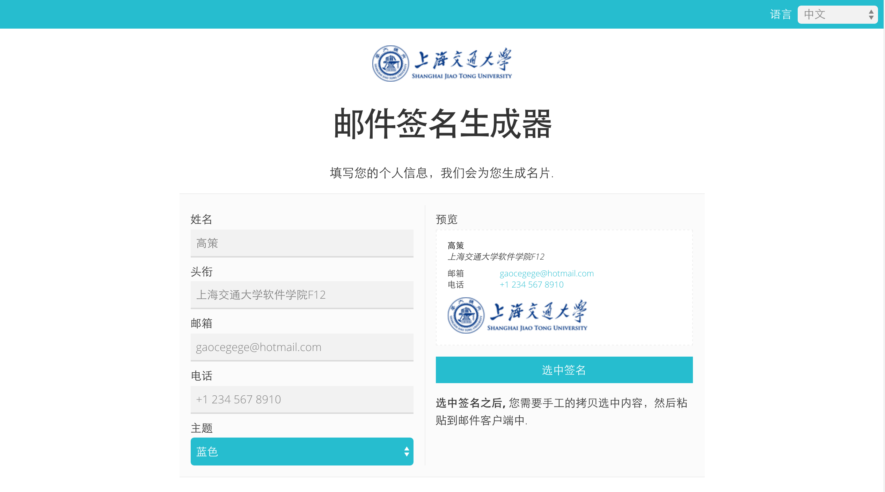

Sjtu-email-signature-generator
This project is maintained by gaocegege
SJTU Email Signature Generator

forked from andrewshawcare/thoughtworks-email-signature-generator
HOWTO
sjtu-email-signature-generator powered by daocloud

RUN Locally

docker pull gaocegege/sjtu-email-signature-generator